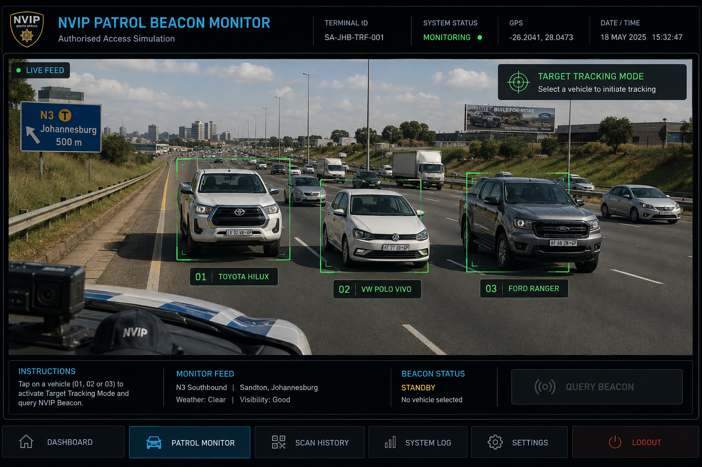

NVIP PATROL BEACON MONITOR
Authorised Access Simulation
BEACON SYSTEM
● MONITORING
🎯 TARGET TRACKING MODE
STANDBY
Select a vehicle to begin tracking.
Registration: —
Make: —
Year: —
Colour: —
Owner: —
ONCOMING VEHICLE IDENTIFICATION
Select a vehicle to activate Target Tracking Mode.

SYSTEM STATUS
No alert detected